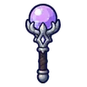 ออร์บม่วงราตรี | 1 | 30 | ไม่มีธาตุ | อาวุธเริ่มต้นของสาย (ได้ตอนเปลี่ยนอาชีพ) |
 ออร์บดอกแดนดิไลออน ออร์บดอกแดนดิไลออน | 2 | 32 | ลม | ดอกไม้ยิงเมล็ด 0.25% |
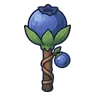 ออร์บบลูเบอร์รี่ | 5 | 33 | ไม่มีธาตุ | กระต่ายเขาเดียว 0.25% |
 ออร์บหนังสติ๊ก ออร์บหนังสติ๊ก | 8 | 34 | ไม่มีธาตุ | เต่าตะไคร่ขี้โมโห ร่างหินเขียว 0.25% |
 ออร์บแอปเปิลหนอนเจาะ ออร์บแอปเปิลหนอนเจาะ | 8 | 29 | พิษ | หนอนแอปเปิลเน่า ร่างหนอนเขียว 0.12% |
 ออร์บไข่กบ ออร์บไข่กบ | 11 | 30 | น้ำ | กบบึงใส 0.12% |
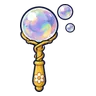 ออร์บฟองสบู่ | 13 | 29 | ไม่มีธาตุ | ตอไม้ผี ร่างเห็ดขึ้น 0.06% |
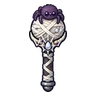 ออร์บใยแมงมุม | 15 | 30 | พิษ | แมงมุมถ้ำ 0.12% |
 ออร์บกองไฟ ออร์บกองไฟ | 18 | 29 | ไฟ | แม่มดเทียนไข 0.06% |
| ออร์บปลิงโคลน | 20 | 29 | พิษ | ปลิงโคลนยักษ์ ร่างเลือด 0.12% |
 ออร์บราชาค้างคาว ออร์บราชาค้างคาว | 22 | 40 | มืด | ราตรีราชาค้างคาว 0.5% |
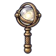 ออร์บวงแหวนทองเหลือง | 26 | 54 | ไม่มีธาตุ | แพะภูเขา 0.25% |
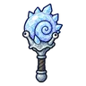 ออร์บเปลือกหอยผลึก | 26 | 53 | น้ำ | หอยทากเปลือกผลึก ร่างผลึกม่วง 0.5% |
 ออร์บผีน้อย ออร์บผีน้อย | 28 | 48 | วิญญาณ | ผีดวงไฟ 0.12% |
| ออร์บปุยเขม่า | 30 | 52 | ไฟ | ปุยเขม่าแตกตัว 0.25% |
 ออร์บกรงเล็บอินทรี ออร์บกรงเล็บอินทรี | 30 | 51 | ไม่มีธาตุ | อินทรีพายุ 0.25% |
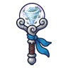 ออร์บพายุหมุน | 32 | 46 | ลม | อินทรีพายุ 0.06% |
 ออร์บขนหมาป่า ออร์บขนหมาป่า | 34 | 50 | มืด | หมาป่าเงาจันทร์ 0.25% |
| ออร์บก้ามแมงป่อง | 37 | 48 | ไฟ | แมงป่องแดง 0.12% |
 ออร์บปลาทอง ออร์บปลาทอง | 39 | 46 | น้ำ | กบบึงใส 0.06% |
 ออร์บเข็มทิศ ออร์บเข็มทิศ | 41 | 48 | ไม่มีธาตุ | ผู้ช่วยนักดาราศาสตร์กลวง 0.12% |
 ออร์บรุ่งอรุณ ออร์บรุ่งอรุณ | 43 | 46 | ศักดิ์สิทธิ์ | หมาจรเมืองหลวง 0.06% |
 ออร์บปุ่มไม้ ออร์บปุ่มไม้ | 45 | 48 | ไม่มีธาตุ | กบบึงใส 0.12% |
 ออร์บราชาเห็ดเรืองแสง ออร์บราชาเห็ดเรืองแสง | 46 | 62 | พิษ | ราชาเห็ดเรืองแสง 0.5% |
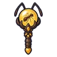 ออร์บอำพันนางพญามด | 49 | 62 | ดิน | รังนางพญามด 0.5% |
 ออร์บหินจีโอด ออร์บหินจีโอด | 52 | 74 | ดิน | นกแร้งหิน 0.25% |
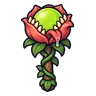 ออร์บดอกไม้กินคน | 54 | 66 | พิษ | ดอกไม้กินคน 0.12% |
 ออร์บลูกแก้วทำนาย ออร์บลูกแก้วทำนาย | 57 | 71 | ไม่มีธาตุ | ตัวอ่อนต้นแม่พิษ 0.25% |
 ออร์บมุกหอยนางรม ออร์บมุกหอยนางรม | 59 | 66 | ไม่มีธาตุ | ชาวเมืองหมอก 0.12% |
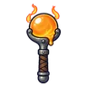 ออร์บแก้วหลอม | 62 | 66 | ไฟ | แมงป่องแดง ร่างทองแดง 0.12% |
 ออร์บลูกแก้วหิมะ ออร์บลูกแก้วหิมะ | 64 | 63 | น้ำ | พลีซิโอซอร์ 0.06% |
 ออร์บฟันเฟือง ออร์บฟันเฟือง | 66 | 66 | ไม่มีธาตุ | ด้ายพันคน 0.12% |
| ออร์บภูตไอร้อน | 66 | 63 | ไฟ | ภูตไอร้อน 0.06% |
 ขวดแก้วพิษรากดำ ขวดแก้วพิษรากดำ | 68 | 73 | พิษ | บอสผู้ถูกรากสิง |
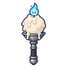 ออร์บเทียนวิญญาณ | 69 | 63 | วิญญาณ | วิญญาณเทียน 0.06% |
 ออร์บจันทร์เพ็ญ ออร์บจันทร์เพ็ญ | 72 | 63 | ศักดิ์สิทธิ์ | ผู้เฝ้าพื้นแก้ว 0.06% |
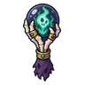 ออร์บราชาสุสาน | 74 | 86 | มืด | บัลลังก์ราชาสุสาน 0.5% |
 ออร์บแกนแมกมา ออร์บแกนแมกมา | 78 | 89 | ไฟ | โกเลมลาวา 0.25% |
 ออร์บแมงกะพรุน ออร์บแมงกะพรุน | 80 | 81 | น้ำ | พลีซิโอซอร์ 0.06% |
 ออร์บไข่แร็พเตอร์ ออร์บไข่แร็พเตอร์ | 81 | 95 | ดิน | แร็พเตอร์ใบไม้ 0.25% |
 ออร์บด้วงแรด ออร์บด้วงแรด | 83 | 85 | ไม่มีธาตุ | ด้วงแรดยักษ์ 0.12% |
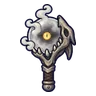 ออร์บหมาหมอก | 84 | 92 | น้ำ | หมาหมอก ร่างอำพัน 0.5% |
 ออร์บดาวเคราะห์วงแหวน ออร์บดาวเคราะห์วงแหวน | 85 | 90 | ไม่มีธาตุ | หุ่นช่างซ่อม 0.25% |
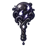 ออร์บหมึกราตรี | 87 | 81 | มืด | หยดหมึกแตกตัว 0.06% |
 ออร์บฝูงดวงวิญญาณ ออร์บฝูงดวงวิญญาณ | 89 | 85 | วิญญาณ | ผู้จุดตะเกียงรุ่นแรก 0.12% |
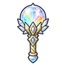 ออร์บปริซึมรุ้ง | 91 | 81 | ไม่มีธาตุ | หุ่นไร้หน้า ร่างไม้ดำ 0.06% |
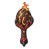 ออร์บไข่มังกรลาวา | 95 | 110 | ไฟ | หัวใจมังกรลาวา 0.5% |
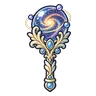 ออร์บดาราจักรนิรันดร์ | 99 | 120 | มืด | ดรอปทั่วโลก Lv 90+ |